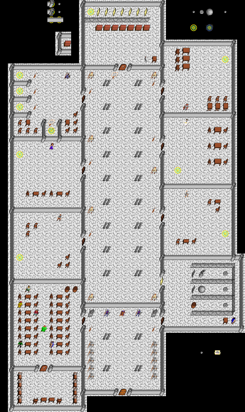

Warriors' Tower, Main Floor
Map Warriors' Tower, Main Floor, in region Somewhere out in the Wilderness. Map level: 18.
Map view:

(click for larger view)
Exits from this map:
- Warriors' Tower, Ice Dragons' Lair
- Warriors' Tower, Mansion - Main Floor
- Warriors' Tower, Electric Dragons' Lair
- Warriors' Tower, Tri Temples
- Warriors' Tower, Graveyard
- Warriors' Tower, Unnatural Mosh Pit
- Warriors' Tower, Chaos Dragons' Lair
- Warriors' Tower, Troll Cave Entry
- world_104_104
- Warriors' Tower, Fire Dragons' Lair
- Warriors' Tower, Giants Main Floor
Exits to this map:
- Warriors' Tower, Ice Dragons' Lair
- Warriors' Tower, Mansion - Main Floor
- Warriors' Tower, Electric Dragons' Lair
- Warriors' Tower, Tri Temples
- Warriors' Tower, Graveyard
- Warriors' Tower, Unnatural Mosh Pit
- Warriors' Tower, Chaos Dragons' Lair
- Warriors' Tower, Troll Cave Entry
- world_104_104
- Warriors' Tower, Fire Dragons' Lair
- Warriors' Tower, The Fallen
- Warriors' Tower, Giants Main Floor
Lore :
Monsters found on map:
a powerful dwarf, academy eldar, conjurer, guard, hall guard, large man, large woman, old crone, sage, scrawny man, seasoned warrior, Townsman, watcher, welldressed man, wounded warrior.
This map is part of the following quests:
- Warriors' Tower (Main entry, no combat but access to various places to fight.)
- ChaosLair (The old crone talks about a fragment of chaos.)
Somewhere out in the Wilderness's map index | Region index | Global map index | World map
{kind=link}